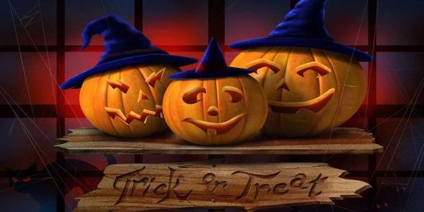
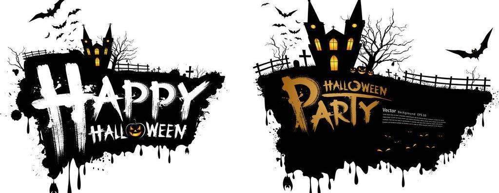

节日习俗：南瓜灯和太妃苹果糖必不可少
我们或多或少都从外国的书刊或影视作品中了解到，西方人在过万圣节时总是会在家里或院子里摆上南瓜灯。但爱尔兰人最早制作的并不是南瓜灯，而是在挖空的萝卜里放一根小蜡烛做成萝卜灯。据说爱尔兰人到了美国不久，发现南瓜不论从来源和雕刻来说都比萝卜更胜一筹，于是南瓜就成了万圣节的新宠。 此外，由于万圣夜临近苹果的丰收期，太妃糖苹果成为应景食品。制法是把苹果插上竹签，然后手持竹签把苹果放在太妃糖浆中转动，有时会再粘上果仁。从前，各家各户会自制太妃糖苹果送给小孩。而如今在这个快节奏的时代背景下，很少有人会自己花时间和精力制作，于是商家们推出了各式各样好看、好玩又好吃的太妃苹果糖。 除此之外，南瓜派也是万圣夜的节庆食品，特别是在美国。南瓜派是美国南方的深秋到初冬的传统家常点心，平常就有在吃，特别在万圣夜的前后，成为一种应景的食物。另外烘干的南瓜子也是常被当做万圣夜的食品。
自17世纪起，庆祝万圣节的传统在南部英格兰逐渐消失，代之以在11月5日举行的火药阴谋（Gunpowder Plot）纪念会。但在苏格兰，爱尔兰和北部英格兰万圣节依然盛行。直到21世纪初，南部英格兰人才重新开始庆祝万圣节，只是方式完全美国化了。 万圣节前夜最流行的游戏是“咬苹果”。游戏时，人们让苹果漂浮在装满水的盆里，然后让孩子们在不用手的条件下用嘴去咬苹果，谁先咬到，谁就是优胜者。 [4] 万圣节源自古代凯尔特民族（Celtic）的新年节庆，此时也是祭祀亡魂的时刻，在避免恶灵干扰的同时，也以食物祭拜祖灵及善灵以祈平安度过严冬。当晚小孩会穿上化妆服，戴上面具，挨家挨户收集糖果。
